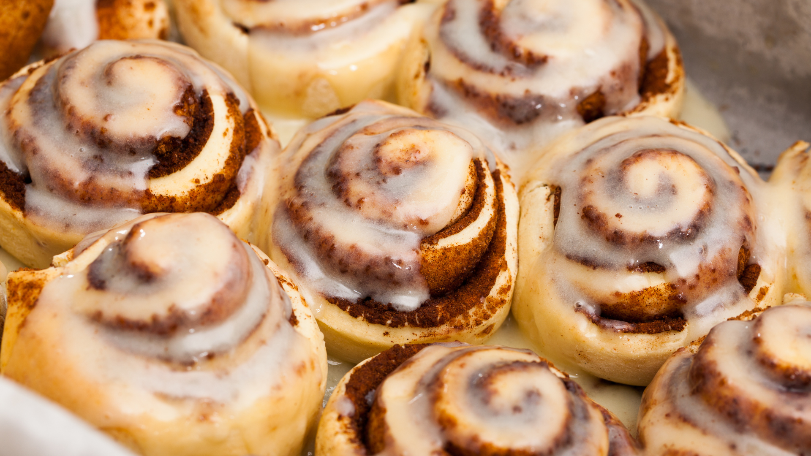

BiteCraft
Crafting flavor, one bite at a time
Navigation
Cinnabon's Cinnamon Rolls
Soft, fluffy, and dripping with a luscious cream cheese frosting, these Cinnabon-inspired cinnamon rolls are the ultimate indulgence. Each roll is packed with a rich cinnamon-sugar filling and baked to golden perfection, just like your favorite mall treat. Perfect for breakfast, dessert, or any time you’re craving something sweet and comforting.

Ingredients
For the Dough:
- 4 cups (500g) all-purpose flour
- 1 cup (240ml) warm milk (110°F/43°C)
- 1/3 cup (75g) granulated sugar
- 1/2 cup (115g) unsalted butter, melted
- 2 1/4 tsp (1 packet) active dry yeast
- 2 large eggs
- 1 tsp of salt
For the Filling:
- 1/2 cup (115g) unsalted butter, softened
- 1 cup (200g) packed brown sugar
- 2 1/2 tbsp ground cinnamon
- 1/4 tsp ground nutmeg (optional)
For the Cream Cheese Frosting
- 4 oz (115g) cream cheese, softened
- 1/4 cup (60g) unsalted butter, softened
- 1 1/2 cups (180g) powdered sugar
- 1/2 tsp vanilla extract
- Pinch of salt
Instructions
- Prepare the Dough - In a large mixing bowl, dissolve the yeast in warm milk and let it sit for about 5 minutes until foamy. Add sugar, melted butter, eggs, and salt. Gradually add the flour and mix until a soft dough forms. Knead the dough on a floured surface for about 5-7 minutes, or until smooth and elastic.
- First Rise - Place the dough in a greased bowl, cover it with a damp cloth, and let it rise in a warm place for 1-2 hours, or until doubled in size.
- Make the Filling - In a small bowl, mix together the brown sugar, cinnamon, and nutmeg. Once the dough has risen, roll it out on a floured surface into a 16x12 inch rectangle. Spread the softened butter evenly over the dough, then sprinkle the cinnamon-sugar mixture generously on top.
- Roll and Cut - Starting from the long side, tightly roll up the dough into a log and pinch the seam to seal. Cut the roll into 12 even slices and place them in a greased 9x13 inch baking dish.
- Second Rise - Cover the rolls with a damp cloth and let them rise for another 30-45 minutes until they’ve puffed up.
- Bake - Preheat your oven to 350°F (175°C). Bake the rolls for 20-25 minutes or until golden brown. Let them cool slightly while you prepare the frosting.
- Make the Cream Cheese Frosting - In a medium bowl, beat together the cream cheese, butter, powdered sugar, vanilla extract, and a pinch of salt until smooth and creamy. Spread the frosting generously over the warm rolls, letting it melt into every swirl.
BiteCraft Bits
- To help your dough rise faster, place it in a slightly warm (but turned-off) oven or microwave with a cup of hot water beside it.
- You can refrigerate the cut rolls overnight. In the morning, let them come to room temperature for about 30 minutes before baking.
- Drizzle a little heavy cream over the rolls just before baking for an extra tender and gooey texture.
Nutritional Information
- Serving size: 1 roll
- Calories: 450
- Protein 6g
- Carbohydrates 60g
- Fat 20g
Reviews
“These taste exactly like Cinnabon! The rolls are soft, and the frosting is just heavenly.” - Emily R.
“I followed this recipe to the letter, and they turned out perfect! The whole family loved them.” - Elliot V.